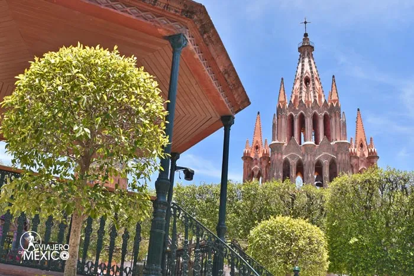

| Sitio |
Costo |
Imagen |
| La Riviera Maya: Desde Cancún hasta Tulúm y otros destinos como las islas Mujeres, Cozumel y Holbox lideran el top de lo más costoso en México. Sobra decir que son lugares de clase mundial cuyas tarifas podrían incluso ser altas hasta para el turismo internacional.
La buena noticia es que a diferencia del Norte, aquí existen más opciones económicas que son factibles para el turismo nacional.
|
En promedio para disfrutar de un día en cualquiera de estos destinos va desde 1,200 hasta 2,800 pesos por persona. |
|
| San Miguel de Allende: La bella Ciudad Patrimonio ha ganado fama internacional en los últimos años por su belleza y cultura. Recientemente ha obtenido títulos como la “Mejor Ciudad del Mundo” por prestigiadas revistas.
Su mercado turístico y residente es mayormente de Estados Unidos, por lo tanto sus tarifas en hospedaje y alimentos es un poco elevado. |
En promedio para disfrutar de un día en este destino cultural va desde 900 hasta 2,600 pesos por persona. |
 |
| Rosarito y Ensenada: Después de Los Cabos, el destino turístico más costoso del Noroeste es la franja hotelera que va desde Tijuana hasta Ensenada, aunque tiene mayores opciones económicas, los visitantes de estos destinos de playa provienen en su mayoría de Estados Unidos y las tarifas se cotizan en dólares.
Otra razón que lo hace costoso es su ubicación geográfica, las distancias entre varios puntos de interés eleva mucho las tarifas de tours y transportes privados.
|
En promedio para disfrutar de un día en este destino de playa va desde 900 hasta 2 mil pesos por persona. |
 |
| Riviera Nayarit: Desde Nuevo Vallarta hasta Punta Mita se han desarrollado grandes complejos hoteleros en esta franja de playas, lo que las ha vuelto poco accesibles para las grandes masas del turismo nacional.
La ventaja es que tiene en su cercanía a otros destinos más económicos como lo es Puerto Vallarta o Bucerías. |
En promedio para disfrutar de un día en este destino de playa va desde 800 hasta 1,900 pesos por persona.
|
|
| Puerto Peñasco: Pese a que no es un destino turístico de mucha fama en México, es un puerto de gran infraestructura hotelera ubicado entre el desierto de Sonora y el Golfo de California. Su cercanía con Estados Unidos lo convierte en un destino de playa muy visitado por los norteamericanos y sus tarifas se cotizan en dólares. |
En promedio para disfrutar de un día en este destino de playa va desde 800 hasta 1,700 pesos por persona |
|
| Sitio |
Costo |
Imagen |
| Playa Mahahual
¡Goza de las aguas cristalinas del Caribe durante febrero! Toma un camión saliendo del aeropuerto de Chetumal para llegar a uno de los paraísos más lindos de Quintana Roo.
|
Transporte: $440
Un tour de esnórquel para ver corales y mantarrayas: $500 |
|
| Mazatlán
Mazatlán te ofrece una vida nocturna emocionante y una escalada por el cerro del Crestón. |
Transporte: $330
Paseo en kayak por Isla Venados: $450 |
 |
| Puerto Escondido
Podrás liberar tortugas o pasear a caballo. ¡Puerto Escondido es uno de los mejores lugares baratos para viajar en México con playa!
|
Transporte: $345
Clase de surf: $550 |
 |
| Ixtapa-Zihuatanejo
Bellos edificios coloniales, kilómetros de suave arena… ¡esta es una joya de las playas bonitas en México! No olvides visitar en abril. |
Transporte: $300
Visita al Museo Arqueológico de la Costa Grande, de cultura teotihuacana: $10
|
|
| Playa Balandra
Cercano a La Paz, está un paraíso de mangles, donde podrás navegar en bote de remos. Uno de los fantásticos lugares baratos para viajar en pareja en México. |
Renta de auto: $800
Paseo en bote al atardecer: $700 |
 |